Name: Utilities Select Sector SPDR Fund
Issuer: State Street Global Advisors
Official Page: https://www.ssga.com/us/en/intermediary/etfs/state-street-utilities-select-sector-spdr-etf-xlu
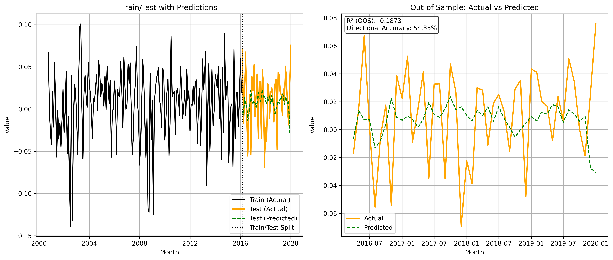
| Dep. Variable: | y | R-squared: | 0.109 |
|---|---|---|---|
| Model: | OLS | Adj. R-squared: | 0.084 |
| Method: | Least Squares | F-statistic: | 4.378 |
| Date: | Sat, 28 Feb 2026 | Prob (F-statistic): | 0.000874 |
| Time: | 18:49:36 | Log-Likelihood: | 334.73 |
| No. Observations: | 185 | AIC: | -657.5 |
| Df Residuals: | 179 | BIC: | -638.1 |
| Df Model: | 5 | ||
| Covariance Type: | nonrobust |
| coef | std err | t | P>|t| | [0.025 | 0.975] | |
|---|---|---|---|---|---|---|
| Intercept | -0.0094 | 0.005 | -1.751 | 0.082 | -0.020 | 0.001 |
| GDP | 5.7435 | 1.470 | 3.908 | 0.000 | 2.844 | 8.643 |
| MCOILWTICO | 0.0388 | 0.036 | 1.075 | 0.284 | -0.032 | 0.110 |
| PCEPI | -2.1432 | 1.451 | -1.477 | 0.141 | -5.006 | 0.720 |
| UNRATE | -0.0854 | 0.119 | -0.715 | 0.476 | -0.321 | 0.150 |
| FEDFUNDS | -0.0179 | 0.021 | -0.854 | 0.394 | -0.059 | 0.023 |
| Omnibus: | 12.424 | Durbin-Watson: | 1.948 |
|---|---|---|---|
| Prob(Omnibus): | 0.002 | Jarque-Bera (JB): | 13.188 |
| Skew: | -0.569 | Prob(JB): | 0.00137 |
| Kurtosis: | 3.646 | Cond. No. | 577. |
| df | sum_sq | mean_sq | F | PR(>F) | |
|---|---|---|---|---|---|
| GDP | 1.0000 | 0.0279 | 0.0279 | 17.1916 | 0.0001 |
| MCOILWTICO | 1.0000 | 0.0017 | 0.0017 | 1.0206 | 0.3138 |
| PCEPI | 1.0000 | 0.0041 | 0.0041 | 2.4990 | 0.1157 |
| UNRATE | 1.0000 | 0.0007 | 0.0007 | 0.4515 | 0.5025 |
| FEDFUNDS | 1.0000 | 0.0012 | 0.0012 | 0.7291 | 0.3943 |
| Residual | 179.0000 | 0.2905 | 0.0016 | NaN | NaN |
Name: Communication Services Select Sector SPDR Fund
Issuer: State Street Global Advisors
Official Page: https://www.ssga.com/us/en/intermediary/etfs/state-street-communication-services-select-sector-spdr-etf-xlc
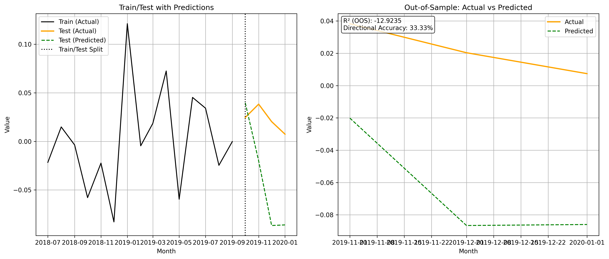
| Dep. Variable: | y | R-squared: | 0.542 |
|---|---|---|---|
| Model: | OLS | Adj. R-squared: | 0.288 |
| Method: | Least Squares | F-statistic: | 2.132 |
| Date: | Sat, 28 Feb 2026 | Prob (F-statistic): | 0.153 |
| Time: | 18:49:36 | Log-Likelihood: | 29.217 |
| No. Observations: | 15 | AIC: | -46.43 |
| Df Residuals: | 9 | BIC: | -42.19 |
| Df Model: | 5 | ||
| Covariance Type: | nonrobust |
| coef | std err | t | P>|t| | [0.025 | 0.975] | |
|---|---|---|---|---|---|---|
| Intercept | 0.0421 | 0.050 | 0.841 | 0.422 | -0.071 | 0.155 |
| GDP | -22.0294 | 13.695 | -1.609 | 0.142 | -53.010 | 8.951 |
| MCOILWTICO | -0.4196 | 0.357 | -1.174 | 0.270 | -1.228 | 0.389 |
| PCEPI | 26.4739 | 14.469 | 1.830 | 0.101 | -6.256 | 59.204 |
| UNRATE | 0.0070 | 0.460 | 0.015 | 0.988 | -1.035 | 1.049 |
| FEDFUNDS | 0.3964 | 0.307 | 1.290 | 0.229 | -0.299 | 1.092 |
| Omnibus: | 1.977 | Durbin-Watson: | 2.402 |
|---|---|---|---|
| Prob(Omnibus): | 0.372 | Jarque-Bera (JB): | 1.197 |
| Skew: | 0.682 | Prob(JB): | 0.550 |
| Kurtosis: | 2.770 | Cond. No. | 1.39e+03 |
| df | sum_sq | mean_sq | F | PR(>F) | |
|---|---|---|---|---|---|
| GDP | 1.0000 | 0.0046 | 0.0046 | 2.2961 | 0.1640 |
| MCOILWTICO | 1.0000 | 0.0055 | 0.0055 | 2.7500 | 0.1316 |
| PCEPI | 1.0000 | 0.0076 | 0.0076 | 3.8085 | 0.0828 |
| UNRATE | 1.0000 | 0.0003 | 0.0003 | 0.1425 | 0.7145 |
| FEDFUNDS | 1.0000 | 0.0033 | 0.0033 | 1.6644 | 0.2292 |
| Residual | 9.0000 | 0.0179 | 0.0020 | NaN | NaN |
Name: Consumer Discretionary Select Sector SPDR Fund
Issuer: State Street Global Advisors
Official Page: https://www.ssga.com/us/en/intermediary/etfs/state-street-consumer-discretionary-select-sector-spdr-etf-xly
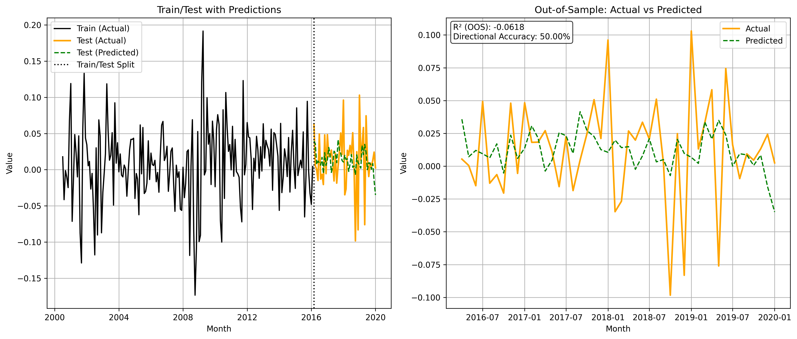
| Dep. Variable: | y | R-squared: | 0.158 |
|---|---|---|---|
| Model: | OLS | Adj. R-squared: | 0.135 |
| Method: | Least Squares | F-statistic: | 6.829 |
| Date: | Sat, 28 Feb 2026 | Prob (F-statistic): | 7.30e-06 |
| Time: | 18:49:37 | Log-Likelihood: | 303.65 |
| No. Observations: | 188 | AIC: | -595.3 |
| Df Residuals: | 182 | BIC: | -575.9 |
| Df Model: | 5 | ||
| Covariance Type: | nonrobust |
| coef | std err | t | P>|t| | [0.025 | 0.975] | |
|---|---|---|---|---|---|---|
| Intercept | 0.0022 | 0.007 | 0.314 | 0.754 | -0.011 | 0.016 |
| GDP | 5.1653 | 1.740 | 2.969 | 0.003 | 1.733 | 8.598 |
| MCOILWTICO | -0.0076 | 0.043 | -0.175 | 0.861 | -0.093 | 0.078 |
| PCEPI | -6.1757 | 1.621 | -3.809 | 0.000 | -9.375 | -2.977 |
| UNRATE | 0.2654 | 0.137 | 1.937 | 0.054 | -0.005 | 0.536 |
| FEDFUNDS | 0.0683 | 0.024 | 2.883 | 0.004 | 0.022 | 0.115 |
| Omnibus: | 1.312 | Durbin-Watson: | 1.992 |
|---|---|---|---|
| Prob(Omnibus): | 0.519 | Jarque-Bera (JB): | 0.980 |
| Skew: | -0.153 | Prob(JB): | 0.613 |
| Kurtosis: | 3.179 | Cond. No. | 503. |
| df | sum_sq | mean_sq | F | PR(>F) | |
|---|---|---|---|---|---|
| GDP | 1.0000 | 0.0237 | 0.0237 | 9.9141 | 0.0019 |
| MCOILWTICO | 1.0000 | 0.0003 | 0.0003 | 0.1350 | 0.7137 |
| PCEPI | 1.0000 | 0.0313 | 0.0313 | 13.1007 | 0.0004 |
| UNRATE | 1.0000 | 0.0064 | 0.0064 | 2.6835 | 0.1031 |
| FEDFUNDS | 1.0000 | 0.0199 | 0.0199 | 8.3118 | 0.0044 |
| Residual | 182.0000 | 0.4353 | 0.0024 | NaN | NaN |
Name: Financial Select Sector SPDR Fund
Issuer: State Street Global Advisors
Official Page: https://www.ssga.com/us/en/intermediary/etfs/state-street-financial-select-sector-spdr-etf-xlf
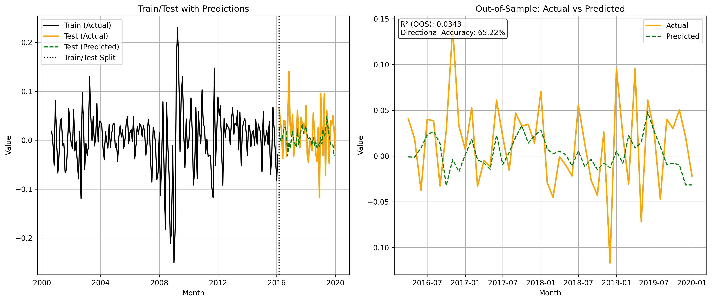
| Dep. Variable: | y | R-squared: | 0.117 |
|---|---|---|---|
| Model: | OLS | Adj. R-squared: | 0.092 |
| Method: | Least Squares | F-statistic: | 4.766 |
| Date: | Sat, 28 Feb 2026 | Prob (F-statistic): | 0.000409 |
| Time: | 18:49:37 | Log-Likelihood: | 265.00 |
| No. Observations: | 186 | AIC: | -518.0 |
| Df Residuals: | 180 | BIC: | -498.7 |
| Df Model: | 5 | ||
| Covariance Type: | nonrobust |
| coef | std err | t | P>|t| | [0.025 | 0.975] | |
|---|---|---|---|---|---|---|
| Intercept | -0.0218 | 0.008 | -2.757 | 0.006 | -0.037 | -0.006 |
| GDP | 7.5396 | 2.096 | 3.597 | 0.000 | 3.404 | 11.675 |
| MCOILWTICO | -0.1344 | 0.050 | -2.670 | 0.008 | -0.234 | -0.035 |
| PCEPI | 0.3136 | 2.158 | 0.145 | 0.885 | -3.944 | 4.572 |
| UNRATE | 0.1369 | 0.169 | 0.810 | 0.419 | -0.196 | 0.470 |
| FEDFUNDS | 0.0012 | 0.030 | 0.039 | 0.969 | -0.059 | 0.061 |
| Omnibus: | 12.652 | Durbin-Watson: | 1.868 |
|---|---|---|---|
| Prob(Omnibus): | 0.002 | Jarque-Bera (JB): | 27.971 |
| Skew: | 0.220 | Prob(JB): | 8.44e-07 |
| Kurtosis: | 4.848 | Cond. No. | 559. |
| df | sum_sq | mean_sq | F | PR(>F) | |
|---|---|---|---|---|---|
| GDP | 1.0000 | 0.0535 | 0.0535 | 15.2778 | 0.0001 |
| MCOILWTICO | 1.0000 | 0.0275 | 0.0275 | 7.8558 | 0.0056 |
| PCEPI | 1.0000 | 0.0001 | 0.0001 | 0.0210 | 0.8851 |
| UNRATE | 1.0000 | 0.0024 | 0.0024 | 0.6728 | 0.4132 |
| FEDFUNDS | 1.0000 | 0.0000 | 0.0000 | 0.0015 | 0.9688 |
| Residual | 180.0000 | 0.6302 | 0.0035 | NaN | NaN |
Name: Consumer Staples Select Sector SPDR Fund
Issuer: State Street Global Advisors
Official Page: https://www.ssga.com/us/en/intermediary/etfs/state-street-consumer-staples-select-sector-spdr-etf-xlp
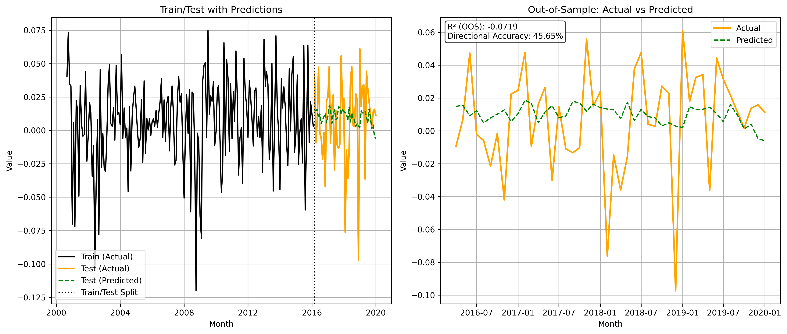
| Dep. Variable: | y | R-squared: | 0.084 |
|---|---|---|---|
| Model: | OLS | Adj. R-squared: | 0.058 |
| Method: | Least Squares | F-statistic: | 3.293 |
| Date: | Sat, 28 Feb 2026 | Prob (F-statistic): | 0.00718 |
| Time: | 18:49:38 | Log-Likelihood: | 377.88 |
| No. Observations: | 186 | AIC: | -743.8 |
| Df Residuals: | 180 | BIC: | -724.4 |
| Df Model: | 5 | ||
| Covariance Type: | nonrobust |
| coef | std err | t | P>|t| | [0.025 | 0.975] | |
|---|---|---|---|---|---|---|
| Intercept | 0.0028 | 0.005 | 0.600 | 0.550 | -0.006 | 0.012 |
| GDP | 1.7806 | 1.168 | 1.525 | 0.129 | -0.524 | 4.085 |
| MCOILWTICO | 0.0197 | 0.029 | 0.681 | 0.496 | -0.037 | 0.077 |
| PCEPI | -0.8267 | 1.093 | -0.757 | 0.450 | -2.983 | 1.329 |
| UNRATE | -0.1109 | 0.096 | -1.158 | 0.249 | -0.300 | 0.078 |
| FEDFUNDS | 0.0272 | 0.016 | 1.711 | 0.089 | -0.004 | 0.059 |
| Omnibus: | 9.649 | Durbin-Watson: | 2.128 |
|---|---|---|---|
| Prob(Omnibus): | 0.008 | Jarque-Bera (JB): | 9.822 |
| Skew: | -0.485 | Prob(JB): | 0.00736 |
| Kurtosis: | 3.572 | Cond. No. | 506. |
| df | sum_sq | mean_sq | F | PR(>F) | |
|---|---|---|---|---|---|
| GDP | 1.0000 | 0.0098 | 0.0098 | 9.3857 | 0.0025 |
| MCOILWTICO | 1.0000 | 0.0008 | 0.0008 | 0.7525 | 0.3868 |
| PCEPI | 1.0000 | 0.0013 | 0.0013 | 1.2827 | 0.2589 |
| UNRATE | 1.0000 | 0.0022 | 0.0022 | 2.1177 | 0.1473 |
| FEDFUNDS | 1.0000 | 0.0030 | 0.0030 | 2.9272 | 0.0888 |
| Residual | 180.0000 | 0.1872 | 0.0010 | NaN | NaN |
Name: Energy Select Sector SPDR Fund
Issuer: State Street Global Advisors
Official Page: https://www.ssga.com/us/en/intermediary/etfs/state-street-energy-select-sector-spdr-etf-xle
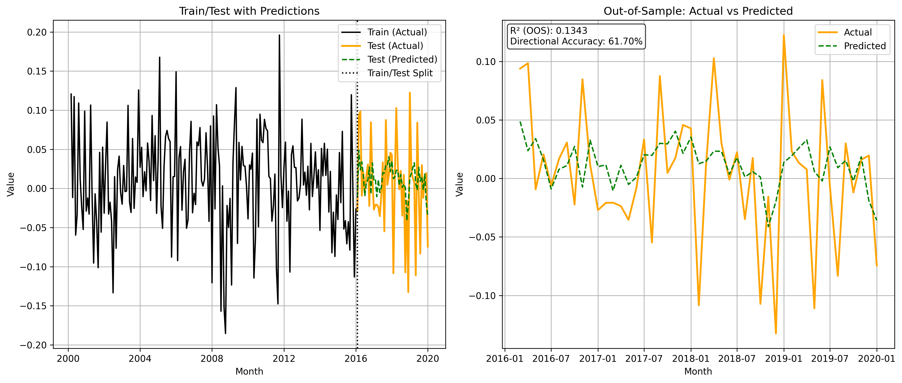
| Dep. Variable: | y | R-squared: | 0.168 |
|---|---|---|---|
| Model: | OLS | Adj. R-squared: | 0.145 |
| Method: | Least Squares | F-statistic: | 7.191 |
| Date: | Sat, 28 Feb 2026 | Prob (F-statistic): | 3.73e-06 |
| Time: | 18:49:39 | Log-Likelihood: | 264.48 |
| No. Observations: | 184 | AIC: | -517.0 |
| Df Residuals: | 178 | BIC: | -497.7 |
| Df Model: | 5 | ||
| Covariance Type: | nonrobust |
| coef | std err | t | P>|t| | [0.025 | 0.975] | |
|---|---|---|---|---|---|---|
| Intercept | -0.0140 | 0.009 | -1.636 | 0.104 | -0.031 | 0.003 |
| GDP | 5.7676 | 2.043 | 2.824 | 0.005 | 1.737 | 9.798 |
| MCOILWTICO | 0.1906 | 0.052 | 3.694 | 0.000 | 0.089 | 0.292 |
| PCEPI | 2.2410 | 1.932 | 1.160 | 0.248 | -1.571 | 6.053 |
| UNRATE | 0.1487 | 0.174 | 0.855 | 0.394 | -0.195 | 0.492 |
| FEDFUNDS | 0.0228 | 0.030 | 0.756 | 0.451 | -0.037 | 0.083 |
| Omnibus: | 0.440 | Durbin-Watson: | 2.464 |
|---|---|---|---|
| Prob(Omnibus): | 0.803 | Jarque-Bera (JB): | 0.186 |
| Skew: | 0.031 | Prob(JB): | 0.911 |
| Kurtosis: | 3.143 | Cond. No. | 483. |
| df | sum_sq | mean_sq | F | PR(>F) | |
|---|---|---|---|---|---|
| GDP | 1.0000 | 0.0636 | 0.0636 | 18.6343 | 0.0000 |
| MCOILWTICO | 1.0000 | 0.0517 | 0.0517 | 15.1239 | 0.0001 |
| PCEPI | 1.0000 | 0.0039 | 0.0039 | 1.1531 | 0.2843 |
| UNRATE | 1.0000 | 0.0016 | 0.0016 | 0.4718 | 0.4931 |
| FEDFUNDS | 1.0000 | 0.0019 | 0.0019 | 0.5709 | 0.4509 |
| Residual | 178.0000 | 0.6079 | 0.0034 | NaN | NaN |
Name: Real Estate Select Sector SPDR Fund
Issuer: State Street Global Advisors
Official Page: https://www.ssga.com/us/en/intermediary/etfs/state-street-real-estate-select-sector-spdr-etf-xlre
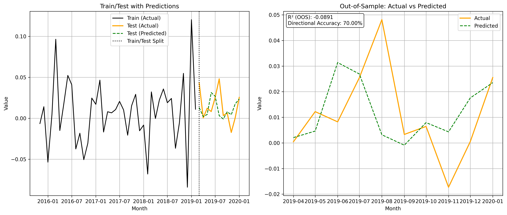
| Dep. Variable: | y | R-squared: | 0.067 |
|---|---|---|---|
| Model: | OLS | Adj. R-squared: | -0.070 |
| Method: | Least Squares | F-statistic: | 0.4869 |
| Date: | Sat, 28 Feb 2026 | Prob (F-statistic): | 0.784 |
| Time: | 18:49:39 | Log-Likelihood: | 74.271 |
| No. Observations: | 40 | AIC: | -136.5 |
| Df Residuals: | 34 | BIC: | -126.4 |
| Df Model: | 5 | ||
| Covariance Type: | nonrobust |
| coef | std err | t | P>|t| | [0.025 | 0.975] | |
|---|---|---|---|---|---|---|
| Intercept | 0.0112 | 0.027 | 0.410 | 0.685 | -0.044 | 0.067 |
| GDP | -0.4867 | 6.612 | -0.074 | 0.942 | -13.923 | 12.950 |
| MCOILWTICO | -0.1044 | 0.089 | -1.173 | 0.249 | -0.285 | 0.076 |
| PCEPI | -0.1491 | 6.353 | -0.023 | 0.981 | -13.061 | 12.762 |
| UNRATE | 0.1270 | 0.246 | 0.516 | 0.609 | -0.373 | 0.627 |
| FEDFUNDS | -0.0099 | 0.056 | -0.176 | 0.861 | -0.124 | 0.104 |
| Omnibus: | 1.515 | Durbin-Watson: | 2.454 |
|---|---|---|---|
| Prob(Omnibus): | 0.469 | Jarque-Bera (JB): | 0.630 |
| Skew: | -0.048 | Prob(JB): | 0.730 |
| Kurtosis: | 3.607 | Cond. No. | 1.06e+03 |
| df | sum_sq | mean_sq | F | PR(>F) | |
|---|---|---|---|---|---|
| GDP | 1.0000 | 0.0000 | 0.0000 | 0.0204 | 0.8873 |
| MCOILWTICO | 1.0000 | 0.0035 | 0.0035 | 2.0653 | 0.1598 |
| PCEPI | 1.0000 | 0.0000 | 0.0000 | 0.0158 | 0.9007 |
| UNRATE | 1.0000 | 0.0005 | 0.0005 | 0.3017 | 0.5864 |
| FEDFUNDS | 1.0000 | 0.0001 | 0.0001 | 0.0311 | 0.8610 |
| Residual | 34.0000 | 0.0571 | 0.0017 | NaN | NaN |
Name: Industrial Select Sector SPDR Fund
Issuer: State Street Global Advisors
Official Page: https://www.ssga.com/us/en/intermediary/etfs/state-street-industrial-select-sector-spdr-etf-xli
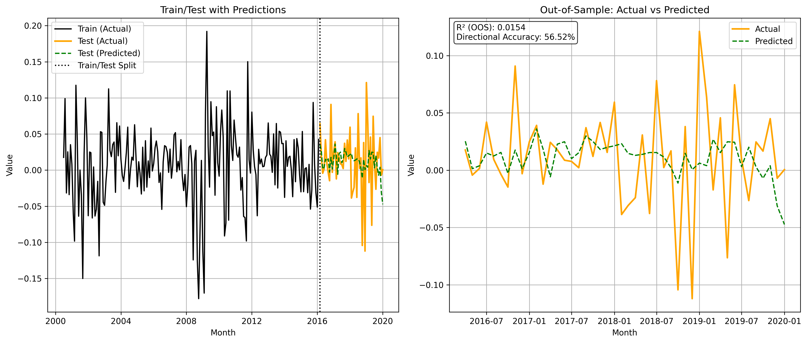
| Dep. Variable: | y | R-squared: | 0.157 |
|---|---|---|---|
| Model: | OLS | Adj. R-squared: | 0.134 |
| Method: | Least Squares | F-statistic: | 6.765 |
| Date: | Sat, 28 Feb 2026 | Prob (F-statistic): | 8.27e-06 |
| Time: | 18:49:40 | Log-Likelihood: | 299.32 |
| No. Observations: | 188 | AIC: | -586.6 |
| Df Residuals: | 182 | BIC: | -567.2 |
| Df Model: | 5 | ||
| Covariance Type: | nonrobust |
| coef | std err | t | P>|t| | [0.025 | 0.975] | |
|---|---|---|---|---|---|---|
| Intercept | -0.0098 | 0.007 | -1.410 | 0.160 | -0.024 | 0.004 |
| GDP | 6.0340 | 1.818 | 3.320 | 0.001 | 2.448 | 9.620 |
| MCOILWTICO | 0.0246 | 0.052 | 0.475 | 0.636 | -0.078 | 0.127 |
| PCEPI | -1.1635 | 2.090 | -0.557 | 0.578 | -5.287 | 2.960 |
| UNRATE | 0.2266 | 0.141 | 1.606 | 0.110 | -0.052 | 0.505 |
| FEDFUNDS | 0.0824 | 0.024 | 3.387 | 0.001 | 0.034 | 0.130 |
| Omnibus: | 6.230 | Durbin-Watson: | 1.952 |
|---|---|---|---|
| Prob(Omnibus): | 0.044 | Jarque-Bera (JB): | 8.770 |
| Skew: | -0.157 | Prob(JB): | 0.0125 |
| Kurtosis: | 4.010 | Cond. No. | 604. |
| df | sum_sq | mean_sq | F | PR(>F) | |
|---|---|---|---|---|---|
| GDP | 1.0000 | 0.0488 | 0.0488 | 19.4785 | 0.0000 |
| MCOILWTICO | 1.0000 | 0.0006 | 0.0006 | 0.2401 | 0.6248 |
| PCEPI | 1.0000 | 0.0029 | 0.0029 | 1.1680 | 0.2812 |
| UNRATE | 1.0000 | 0.0037 | 0.0037 | 1.4629 | 0.2280 |
| FEDFUNDS | 1.0000 | 0.0287 | 0.0287 | 11.4734 | 0.0009 |
| Residual | 182.0000 | 0.4558 | 0.0025 | NaN | NaN |
Name: Health Care Select Sector SPDR Fund
Issuer: State Street Global Advisors
Official Page: https://www.ssga.com/us/en/intermediary/etfs/state-street-health-care-select-sector-spdr-etf-xlv
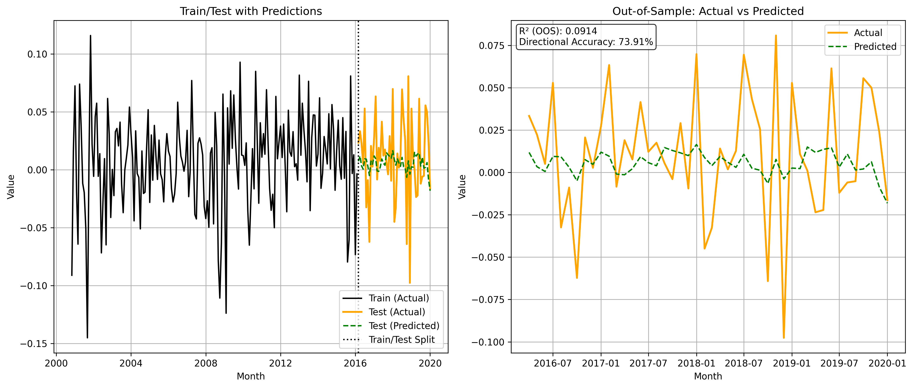
| Dep. Variable: | y | R-squared: | 0.053 |
|---|---|---|---|
| Model: | OLS | Adj. R-squared: | 0.026 |
| Method: | Least Squares | F-statistic: | 1.975 |
| Date: | Sat, 28 Feb 2026 | Prob (F-statistic): | 0.0845 |
| Time: | 18:49:40 | Log-Likelihood: | 332.41 |
| No. Observations: | 184 | AIC: | -652.8 |
| Df Residuals: | 178 | BIC: | -633.5 |
| Df Model: | 5 | ||
| Covariance Type: | nonrobust |
| coef | std err | t | P>|t| | [0.025 | 0.975] | |
|---|---|---|---|---|---|---|
| Intercept | -0.0062 | 0.006 | -1.113 | 0.267 | -0.017 | 0.005 |
| GDP | 3.4170 | 1.429 | 2.392 | 0.018 | 0.598 | 6.236 |
| MCOILWTICO | 0.0027 | 0.042 | 0.065 | 0.948 | -0.080 | 0.086 |
| PCEPI | 1.0596 | 1.682 | 0.630 | 0.530 | -2.260 | 4.379 |
| UNRATE | 0.1511 | 0.120 | 1.258 | 0.210 | -0.086 | 0.388 |
| FEDFUNDS | -0.0109 | 0.020 | -0.536 | 0.592 | -0.051 | 0.029 |
| Omnibus: | 5.236 | Durbin-Watson: | 1.908 |
|---|---|---|---|
| Prob(Omnibus): | 0.073 | Jarque-Bera (JB): | 5.254 |
| Skew: | -0.281 | Prob(JB): | 0.0723 |
| Kurtosis: | 3.609 | Cond. No. | 589. |
| df | sum_sq | mean_sq | F | PR(>F) | |
|---|---|---|---|---|---|
| GDP | 1.0000 | 0.0112 | 0.0112 | 6.8695 | 0.0095 |
| MCOILWTICO | 1.0000 | 0.0008 | 0.0008 | 0.4824 | 0.4882 |
| PCEPI | 1.0000 | 0.0004 | 0.0004 | 0.2222 | 0.6379 |
| UNRATE | 1.0000 | 0.0033 | 0.0033 | 2.0114 | 0.1579 |
| FEDFUNDS | 1.0000 | 0.0005 | 0.0005 | 0.2877 | 0.5924 |
| Residual | 178.0000 | 0.2905 | 0.0016 | NaN | NaN |
Name: Materials Select Sector SPDR Fund
Issuer: State Street Global Advisors
Official Page: https://www.ssga.com/us/en/intermediary/etfs/state-street-materials-select-sector-spdr-etf-xlb
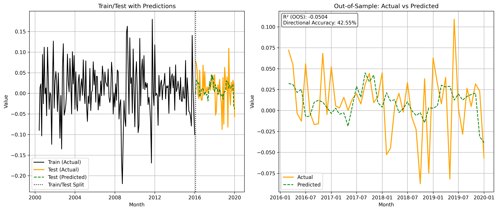
| Dep. Variable: | y | R-squared: | 0.155 |
|---|---|---|---|
| Model: | OLS | Adj. R-squared: | 0.132 |
| Method: | Least Squares | F-statistic: | 6.670 |
| Date: | Sat, 28 Feb 2026 | Prob (F-statistic): | 9.94e-06 |
| Time: | 18:49:41 | Log-Likelihood: | 273.91 |
| No. Observations: | 188 | AIC: | -535.8 |
| Df Residuals: | 182 | BIC: | -516.4 |
| Df Model: | 5 | ||
| Covariance Type: | nonrobust |
| coef | std err | t | P>|t| | [0.025 | 0.975] | |
|---|---|---|---|---|---|---|
| Intercept | -0.0080 | 0.008 | -0.993 | 0.322 | -0.024 | 0.008 |
| GDP | 8.2973 | 2.109 | 3.934 | 0.000 | 4.135 | 12.459 |
| MCOILWTICO | 0.0640 | 0.050 | 1.273 | 0.205 | -0.035 | 0.163 |
| PCEPI | -7.6823 | 1.925 | -3.991 | 0.000 | -11.481 | -3.884 |
| UNRATE | 0.0573 | 0.171 | 0.335 | 0.738 | -0.280 | 0.395 |
| FEDFUNDS | -0.0492 | 0.029 | -1.696 | 0.092 | -0.106 | 0.008 |
| Omnibus: | 1.276 | Durbin-Watson: | 2.328 |
|---|---|---|---|
| Prob(Omnibus): | 0.528 | Jarque-Bera (JB): | 0.930 |
| Skew: | 0.050 | Prob(JB): | 0.628 |
| Kurtosis: | 3.330 | Cond. No. | 528. |
| df | sum_sq | mean_sq | F | PR(>F) | |
|---|---|---|---|---|---|
| GDP | 1.0000 | 0.0455 | 0.0455 | 13.8757 | 0.0003 |
| MCOILWTICO | 1.0000 | 0.0062 | 0.0062 | 1.8994 | 0.1698 |
| PCEPI | 1.0000 | 0.0466 | 0.0466 | 14.2109 | 0.0002 |
| UNRATE | 1.0000 | 0.0016 | 0.0016 | 0.4849 | 0.4871 |
| FEDFUNDS | 1.0000 | 0.0094 | 0.0094 | 2.8772 | 0.0916 |
| Residual | 182.0000 | 0.5973 | 0.0033 | NaN | NaN |
Name: Technology Select Sector SPDR Fund
Issuer: State Street Global Advisors
Official Page: https://www.ssga.com/us/en/intermediary/etfs/state-street-technology-select-sector-spdr-etf-xlk
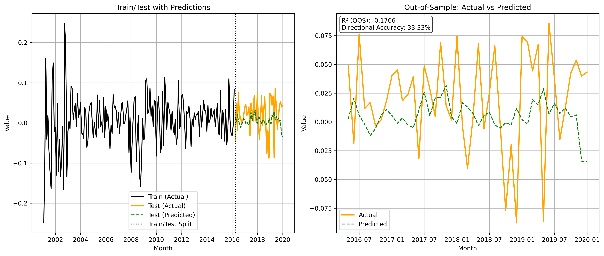
| Dep. Variable: | y | R-squared: | 0.087 |
|---|---|---|---|
| Model: | OLS | Adj. R-squared: | 0.061 |
| Method: | Least Squares | F-statistic: | 3.369 |
| Date: | Sat, 28 Feb 2026 | Prob (F-statistic): | 0.00623 |
| Time: | 18:49:42 | Log-Likelihood: | 249.89 |
| No. Observations: | 182 | AIC: | -487.8 |
| Df Residuals: | 176 | BIC: | -468.6 |
| Df Model: | 5 | ||
| Covariance Type: | nonrobust |
| coef | std err | t | P>|t| | [0.025 | 0.975] | |
|---|---|---|---|---|---|---|
| Intercept | -0.0090 | 0.008 | -1.069 | 0.286 | -0.026 | 0.008 |
| GDP | 6.5893 | 2.116 | 3.113 | 0.002 | 2.413 | 10.766 |
| MCOILWTICO | -0.0126 | 0.056 | -0.225 | 0.822 | -0.123 | 0.098 |
| PCEPI | -5.4093 | 2.095 | -2.582 | 0.011 | -9.544 | -1.274 |
| UNRATE | -0.1334 | 0.174 | -0.768 | 0.444 | -0.476 | 0.209 |
| FEDFUNDS | -0.0283 | 0.031 | -0.909 | 0.365 | -0.090 | 0.033 |
| Omnibus: | 14.110 | Durbin-Watson: | 1.854 |
|---|---|---|---|
| Prob(Omnibus): | 0.001 | Jarque-Bera (JB): | 41.515 |
| Skew: | -0.054 | Prob(JB): | 9.66e-10 |
| Kurtosis: | 5.337 | Cond. No. | 490. |
| df | sum_sq | mean_sq | F | PR(>F) | |
|---|---|---|---|---|---|
| GDP | 1.0000 | 0.0332 | 0.0332 | 8.5509 | 0.0039 |
| MCOILWTICO | 1.0000 | 0.0000 | 0.0000 | 0.0080 | 0.9290 |
| PCEPI | 1.0000 | 0.0275 | 0.0275 | 7.0660 | 0.0086 |
| UNRATE | 1.0000 | 0.0015 | 0.0015 | 0.3956 | 0.5302 |
| FEDFUNDS | 1.0000 | 0.0032 | 0.0032 | 0.8256 | 0.3648 |
| Residual | 176.0000 | 0.6839 | 0.0039 | NaN | NaN |